FLOSS 8: growth morphs, seasonal length sampling and tuning
Source:vignettes/floss-08-growth-morphs.Rmd
floss-08-growth-morphs.RmdThis guide sets up a FLOSS operating model (OM) with growth morphs, samples it by season, and tunes it to a target exploitation history. It is written for simulation tests of length-based methods (LBSPR, LBB, fishblicc, FLicc), where the way the OM generates length data decides whether a test is fair. The equations are in the appendix at the end; each step in the main text refers to them.
1 Why morphs -> 2 Fishery and species -> 3 Morph settings -> 4 Build the OM
-> 5 Check the morphs -> 6 Tune -> 7 Seasonal length samples -> 8 Age samples
-> 9 Export and fit -> Appendix: equations1 Why growth morphs
Gears select fish by length, not by age. Within an age, fast growers reach the selected lengths first and are removed first, so the survivors of an exploited cohort are smaller at age than the unfished cohort. This is the Rosa Lee effect. A standard age-structured OM applies selectivity at age (the selectivity at length averaged over the lengths of an age), which removes all fish of an age at the same rate. The survivors then keep the unexploited length distribution, and the length data are too long at a given level of fishing. A length-based method fitted to such data sees too little mortality. In earlier FLOSS runs, SPR from FLicc was biased by +20% to +100% for fast-growing species and dome-shaped gears.
With gtg, build_om() follows growth-type
groups (morphs) that differ in asymptotic length (Linf) through each
cohort’s fishing history. The age-structured OM is then run with the
effective fishing mortality, weight and maturity at age that result. The
FLStock stays a standard FLR object, so FLBRP, FLRef and
mse work as before. The length samples are drawn from the morphs in each
fleet’s catch.
The design follows the growth-type-group (GTG) LBSPR of Hordyk et al. (2016). The same idea underlies the platoons of Stock Synthesis and the unit-structured FLR implementation of M. Taylor (pers. comm.).
2 Fishery and species
The fishery has three gears: traps (dome-shaped, small fish), gillnet (dome, medium fish) and linefish (logistic, large fish). We use the rabbitfish Siganus sutor. It is short-lived and fast-growing, which is where the morphs matter most.
fy <- load_fishery("reef_3fleets")
sp <- load_species("siganus_sutor")
unlist(sp$lh[c("linf", "k", "t0", "M", "tm", "tmax", "sigR", "rho", "s")])
#> linf k t0 M tm tmax sigR
#> 37.1516000 0.7124000 -0.1000000 0.9751742 1.5608000 9.0000000 0.7354000
#> rho s
#> 0.3207057 0.5990000
unlist(sp$relq)
#> traps gillnet linefish
#> 0.58 0.18 0.02Catchability relative to Fmsy (relq) sets each gear’s
apical F as \(F_{f,y} = \text{relq}_f \,
F_{MSY} \, E_{f,y}\) (methods appendix, section 2). It is the
main tuning parameter (section 6).
FLRef::plot_sel_la(species_sel(sp), age_by = 1, len_by = 5)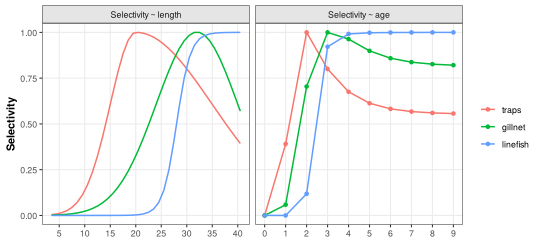
3 Morph settings
gtg_settings() sets the number of morphs n,
the range of the morph grid in standard deviations (maxsd),
and the total coefficient of variation (CV) of Linf among fish,
cv. The total CV is split into a between-morph part and a
within-morph part (Appendix A1). By default the within-morph CV is
cv / sqrt(n), so more morphs give narrower morphs. The
total spread is always the cv you set. nsub
(default 12) is the number of steps within the year: in each month every
gear selects on the length each morph has then, so fishing follows
growth through the year (Appendix A3, A5). nsub = 1 applies
selectivity at the mid-year length for the whole year.
gs <- gtg_settings(n = 15, maxsd = 2.5, cv = 0.1)
unlist(gs)
#> n maxsd cv cv_res cv_between nsub
#> 15.00000000 2.50000000 0.10000000 0.02581989 0.09660918 12.00000000plot_gtg_linf() shows the distribution of lengths within
each morph, with each peak placed on the target normal distribution of
Linf among fish (line, total CV). It works on a morph structure before
any OM is built:
G <- FLOSS:::gtg_setup(sp, fy$fleets, gs)
plot_gtg_linf(G) + ggtitle(sp$species)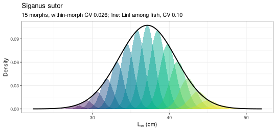
(after Mark Taylor)
Choosing n and cv. A CV of
0.1 is the usual default in GTG-LBSPR and FLicc. Values of 0.05–0.15
cover most teleosts. SPR converges as n grows: from 15 to
25 morphs it changes by less than 1%, while 5 morphs give SPR a few
percent too low. Run time grows linearly with n, so 15 is a
good default. A quick check at the current F of each gear:
f_now <- c(traps = 0.6, gillnet = 0.2, linefish = 0.04)
vapply(c(5, 9, 15, 25), function(n)
FLOSS:::gtg_spr(FLOSS:::gtg_setup(sp, fy$fleets, gtg_settings(n = n)), f_now), 0)
#> [1] 0.2673334 0.2683168 0.2688153 0.26911464 Build the operating model
build_om() takes gtg like any other
setting. Recruitment variability (sigR) and autocorrelation
come from the species spec. Autocorrelation is used only with
ar1 = TRUE.
sp$lh$sigR <- 0.5
om <- build_om(sp, fy, nsim = 20, gtg = gs)
om
#> FLOSS operating model: Siganus sutor
#> fishery: reef_3fleets ( traps, gillnet, linefish )
#> years: 1971 - 2025 iterations: 20
#> refpts: Fmsy=0.322, Bmsy=731, Bthr=365, Blim=183, MSY=544, B0=2300
#> final year (median): B/Bmsy = 0.658 F/Fmsy = 1.29The morph part of the OM is in om$gtg:
-
G: the morph structure (grid, lengths, weights, maturity and selectivity by morph and age); -
spr: the true equilibrium SPR by year and iteration, from the morphs; -
fapic_full: apical F by fleet, including the burn-in years; -
refpts: reference points of the morph equilibrium (Appendix A10); -
refpts_flbrp: the same from FLBRP on the fished exploitation pattern; -
cwt: catch weight at age by fleet.
round(om$gtg$refpts, 3)
#> Fmsy Bmsy MSY B0 Fspr Bspr SPRmsy Fmult_msy
#> 0.322 730.979 544.033 2297.113 0.353 642.501 0.432 0.498
#> Fmult_spr
#> 0.548
round(om$gtg$refpts_flbrp, 3)
#> An object of class "FLPar"
#> params
#> Fmsy Bmsy MSY B0
#> 0.332 693.203 557.661 2296.790
#> units: NAThe two sets of reference points differ. In the morph equilibrium,
weight, maturity and effective selectivity at age change with F. FLBRP
holds the fished pattern fixed. om$stock@refpts uses the
morph values.
Reference points from steepness and R0.
gtg_brp() computes the same morph-equilibrium reference
points for any steepness \(h\) and
unfished recruitment \(R_0\), from a
species spec without building an OM, or from an OM (by default with its
own stock-recruitment relationship). The fleet pattern sets how F is
shared between gears. This shows how Fmsy and Bmsy depend on which gears
fish:
round(gtg_brp(sp, h = 0.7, R0 = 1000), 3) # pattern = relq, B in t (R0 in thousands)
#> An object of class "FLPar"
#> params
#> Fmsy Bmsy MSY B0 BmsyB0
#> 0.406 21.168 21.045 75.309 0.281
#> SPRmsy Fspr Bspr h R0
#> 0.358 0.360 24.701 0.700 1000.000
#> Fmsy_traps Fmsy_gillnet Fmsy_linefish
#> 0.467 0.145 0.016
#> units: NA
round(gtg_brp(sp, h = 0.7, R0 = 1000,
pattern = c(traps = 0, gillnet = 0, linefish = 1)), 3) # linefish only
#> An object of class "FLPar"
#> params
#> Fmsy Bmsy MSY B0 BmsyB0
#> 1.085 21.031 26.093 75.309 0.279
#> SPRmsy Fspr Bspr h R0
#> 0.356 0.967 24.701 0.700 1000.000
#> Fmsy_traps Fmsy_gillnet Fmsy_linefish
#> 0.000 0.000 1.733
#> units: NA
all.equal(c(gtg_brp(om)[c("Fmsy", "Bmsy")]), unname(om$gtg$refpts[c("Fmsy", "Bmsy")]))
#> [1] TRUE5 Check the morphs
Growth curves. Line width shows each morph’s share of the recruits; the dashed line is the VB curve of the mean morph.
plot_gtg_growth(om)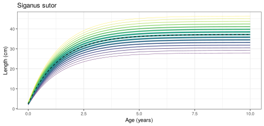
Effective selectivity at age. This is fleet F at age divided by its maximum, in the first and last years, against the selectivity at age that an age-based OM would use. All gears select young fast growers earlier than the age-based curve suggests. At older ages, the fish left in the selected range are fished down as F builds up, so effective selectivity at those ages falls between the first and the last year.
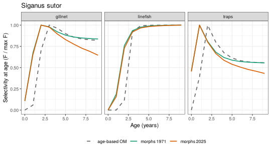
Length at age (Rosa Lee). Mean length at age in the population and in each fleet’s catch, in the last year. The direction depends on the shape of the selectivity. A logistic gear removes the fast growers of an age first, so the population mean falls below the VB curve (the classic Rosa Lee effect). Dome-shaped gears, the traps and gillnet here, remove the slow growers that stay in the selected range longer, while the fast growers outgrow it, so the population mean at older ages rises above the VB curve. The catch of each gear sits where its selectivity puts it: traps and gillnet catch the slow growers of older ages, linefish the fast growers.
plot_gtg_lenage(om)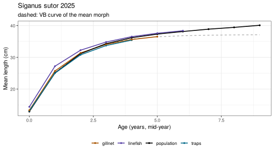
6 Tune the operating model
Tuning sets four things: the exploitation history (how far SPR
falls), the catch shares by gear, the recruitment variability, and the
morph settings. The OM is cheap to build with nsim = 1 and
sigR = 0.01, so it can be tuned by searching over these
settings.
Exploitation history. plot_gtg_spr()
shows the true SPR by year, with SPR at MSY of the morph equilibrium
(dashed) and the 0.4 proxy (dotted).
plot_gtg_spr(om)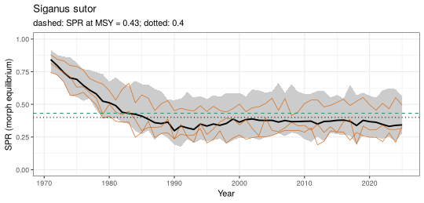
To reach a target SPR at the end of the series, scale all
relq values by a common multiplier. The shares between
gears stay fixed. The search below runs on a deterministic OM (one
iteration, no recruitment variation):
final_spr <- function(mult, sp, years = 5) {
s <- sp; s$relq <- lapply(sp$relq, `*`, mult); s$lh$sigR <- 0.01
o <- build_om(s, fy, nsim = 1, gtg = gs)
mean(utils::tail(c(o$gtg$spr), years))
}
target <- 0.3
mult <- uniroot(function(m) final_spr(m, sp) - target, c(0.2, 3), tol = 0.01)$root
round(mult, 3)
#> [1] 1.197
sp_tuned <- sp; sp_tuned$relq <- lapply(sp$relq, `*`, mult)
unlist(sp_tuned$relq)
#> traps gillnet linefish
#> 0.69447835 0.21552776 0.02394753Catch shares. Catch by gear follows from each gear’s relq, its effort history and what its selectivity overlaps with the stock. Change a single gear’s relq to shift the shares (in the FLicc paper, gillnet relq was raised for emperor to give a stronger distortion from that gear).
om_t <- build_om(sp_tuned, fy, nsim = 20, gtg = gs)
cs <- catch_fleet(om_t)
share <- sapply(cs, function(x) c(iterMedians(x[, ac(2016:2025)]))) /
rowSums(sapply(cs, function(x) c(iterMedians(x[, ac(2016:2025)]))))
round(colMeans(share), 2)
#> traps gillnet linefish
#> 0.82 0.18 0.01
plot_fleets(om_t, "catch")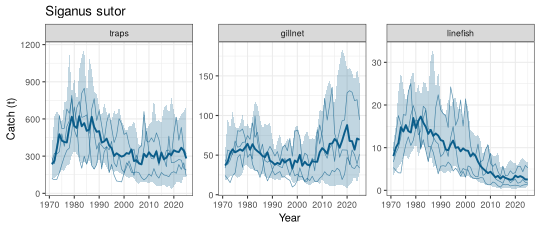
Recruitment. sp$lh$sigR sets the
variability of the lognormal recruitment deviations.
sp$lh$rho with ar1 = TRUE adds
autocorrelation. For short-lived species, a high sigmaR makes the length
composition of any single year far from equilibrium, which
equilibrium-based methods cannot follow. Common test values are 0.4
(Pons et al. 2019), 0.6 (Hordyk et al. 2014b; Rudd and Thorson 2018) and
0.74 with rho 0.43 (the meta-analytic value; Thorson et al. 2014).
7 Seasonal length samples
A fishery operates all year. With morphs, fish grow and fast growers
are removed during the year, so a single mid-year sample distorts the
length composition. In the FLicc tests, SPR was biased by +27% to +61%
with one sample per year, +2% to +10% with four seasons, and about 0
with monthly samples. oem_settings(seasons = 12) samples
each month. Each month’s catch at age is the Baranov fraction of the
annual catch (Appendix A6). Lengths are read at the middle of the month
from the morphs in the catch (Appendix A7).
oem <- oem_settings(fy, seasons = 12, survey = NULL,
years = list(traps = c(2016, 2025), gillnet = c(2011, 2025),
linefish = c(2006, 2025)),
lfd_ess_age = 30, lfd_ess_len = 300,
bio_n = c(traps = 150, gillnet = 0, linefish = 0),
bio_age_scheme = "random", bio_p_aged = 1, age_cv = 0)
dat <- sample_data(list(rabbitfish = om_t), oem, iters = 1:5, seed = 1)
head(dat$lfd)
#> species iter year season source len_mm n
#> 1 Siganus sutor 1 2016 1 traps 180 1
#> 2 Siganus sutor 1 2016 1 traps 190 3
#> 3 Siganus sutor 1 2016 1 traps 200 2
#> 4 Siganus sutor 1 2016 1 traps 210 3
#> 5 Siganus sutor 1 2016 1 traps 220 6
#> 6 Siganus sutor 1 2016 1 traps 230 6ess_age is the number of clusters (stage 1, ages) and
ess_len the number of fish measured (stage 2) per gear and
year. Both are split over the seasons by the season shares of
season_design() (equal by default).
season_design() can also set unequal shares, shifts in
sampling over time and missing seasons.
plot_seasons(dat, iter = 1)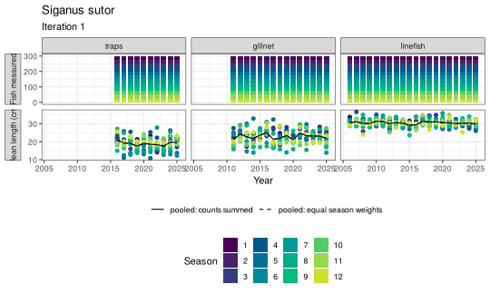
Truth against samples. gtg_lfq() gives
the true catch-at-length by fleet, year and season: the composition the
samples are drawn from, without sampling error (Appendix A9; the
approach follows M. Taylor’s FLR platoon code).
plot_gtg_lfq() shows it with the samples (here with the
seasons weighted equally, as the samples are; see below):
plot_gtg_lfq(om_t, dat, iter = 1, years = c(2016, 2025), oem = oem, season_weights = "equal")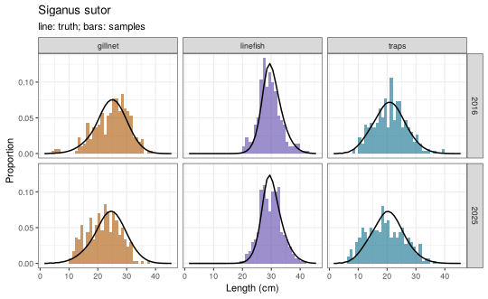
lq <- gtg_lfq(om_t, oem, iters = 1, years = 2025)
dim(lq$traps) # length x year x unit x season x area x iter
#> [1] 45 1 1 12 1 1By default gtg_lfq() weights the seasons by their catch.
Samples split equally over the seasons give each month the same weight
instead. For a fast-growing species with high mortality, the catch falls
through the year while the fish grow, so the equally weighted samples
are longer than the catch-weighted truth.
season_weights = "equal" gives the truth that matches this
design. With large samples, the mean lengths agree:
o_big <- oem_settings(fy, seasons = 12, survey = NULL, lfd_ess_age = 5000, lfd_ess_len = 50000)
mean_len <- function(q) { L <- an(dimnames(q)$len) + 0.5; n <- c(seasonSums(q)); sum(L * n) / sum(n) }
set.seed(2)
l <- sample_lfd(om_t, o_big, iters = 1)
l <- l[l$year == 2025, ]
round(rbind(
`truth, catch-weighted` = sapply(gtg_lfq(om_t, o_big, iters = 1, years = 2025), mean_len),
`truth, equal seasons` = sapply(gtg_lfq(om_t, o_big, iters = 1, years = 2025,
season_weights = "equal"), mean_len),
samples = (tapply((l$len_mm / 10 + 0.5) * l$n, l$source, sum) / tapply(l$n, l$source, sum))[fy$fleets]), 2)
#> traps gillnet linefish
#> truth, catch-weighted 20.31 24.10 30.26
#> truth, equal seasons 20.37 24.11 30.27
#> samples 20.31 24.12 30.25To weight samples by catch, set the season shares of
season_design() in proportion to the seasonal catch, or
raise the samples to the catch (lfd_aggregate()).
Why monthly sampling matters. Fish grow through the year. A single mid-year sample reads every fish at the same point in its growth, so the cohorts appear as sharp modes. Real catches, taken all year, smear the modes over a year’s growth. Monthly samples reproduce that smearing. A length-based method that assumes continuous fishing (FLicc, LBSPR) expects the smeared composition:
lfd_S <- function(S) {
o <- oem_settings(fy, seasons = S, survey = NULL, lfd_ess_age = 5000, lfd_ess_len = 50000)
set.seed(3)
l <- sample_lfd(om_t, o, iters = 1)
l <- stats::aggregate(n ~ len_mm, l[l$year == 2025 & l$source == "traps", ], sum)
data.frame(L = l$len_mm / 10 + 0.5, p = l$n / sum(l$n),
what = paste(S, if (S == 1) "season (mid-year)" else "seasons"))
}
q <- gtg_lfq(om_t, o_big, fleets = "traps", iters = 1, years = 2025, season_weights = "equal")$traps
tr <- data.frame(L = an(dimnames(q)$len) + 0.5, p = c(seasonSums(q)) / sum(q), what = "truth (equal seasons)")
ggplot(rbind(lfd_S(1), lfd_S(12)), aes(L, p, colour = what)) +
geom_step(direction = "mid") +
geom_line(data = tr, colour = "black", linewidth = 0.8) +
scale_colour_manual(values = c("#D95F02", "#1B9E77")) +
coord_cartesian(xlim = c(10, 40)) +
labs(x = "Length (cm)", y = "Proportion", colour = NULL, title = "Traps, 2025",
subtitle = "black: truth; large samples (50,000 fish) with one or twelve seasons") +
theme_bw() + theme(legend.position = "bottom")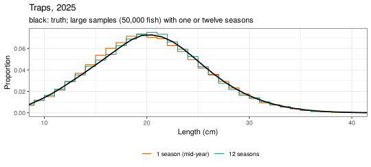
8 Age samples (age-length keys)
sample_bio() draws fish from each gear’s catch by
season. Their lengths come from the morphs, as for the length samples.
Ageing can be random (bio_age_scheme = "random", a share
bio_p_aged of the fish) or stratified by length
("stratified", up to bio_n_per_bin fish per
length class). Conditional age at length is not changed by length-based
selection of the aged fish, so either scheme gives an unbiased
conditional key. A von Bertalanffy curve fitted directly to age-length
pairs from a selective gear is biased; FLicc’s internal ALK option
accounts for selection.
plot_bio(dat, iter = 1, what = "age_length")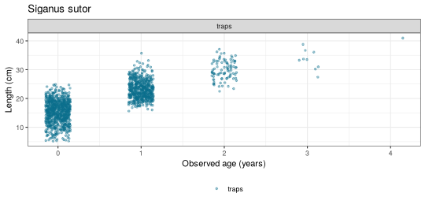
9 Export and fit
as_flr() returns the samples as FLR objects: length
compositions by gear (FLQuants, length x year, summed over
seasons), catch by gear and the life history (FLPar, with
maturity L50 and L95 as the OM uses them and weight in kg). These go
straight into FLicc:
x <- as_flr(dat, iter = 1)
names(x)
#> [1] "species" "iter" "catch" "catch_total"
#> [5] "indices" "effort" "lfd" "lfd_raised"
#> [9] "lhpar" "catch_by_gear"
x$lhpar
#> An object of class "FLPar"
#> params
#> linf k t0 M L50 L95 a b
#> 37.15160 0.71240 -0.10000 0.97517 25.77165 31.57013 0.00001 3.04000
#> tmax s
#> 9.00000 0.59900
#> units: NA
yrs <- ac(2016:2025)
lf <- FLQuants(lapply(x$lfd[fy$fleets], function(q) {
z <- FLQuant(0, dimnames = list(len = dimnames(q)$len, year = yrs))
yy <- intersect(dimnames(q)$year, yrs); z[, yy] <- q[, yy]; z }))
cbg <- FLQuants(lapply(x$catch[fy$fleets], function(q) q[, yrs]))
fit <- FLicc::fiticc(lf, FLicc::stocklen(lf, x$lhpar),
sel_fun = c("dsnormal", "normal", "logistic"), catch_by_gear = cbg,
settings = list(CVL = 0.1, pop_model = "gtg", obs_model = "dm"), verbose = FALSE)
est <- FLicc::spr_ci_flicc(fit)
est$year <- as.numeric(est$year)
tru <- as.data.frame(om_t$gtg$spr[, yrs, , , , 1])
ggplot(est, aes(year, spr)) +
geom_ribbon(aes(ymin = lwr, ymax = upr), fill = "grey80") +
geom_line(aes(colour = "FLicc")) +
geom_line(data = tru, aes(an(as.character(year)), data, colour = "OM (morphs)")) +
scale_colour_manual(values = c(FLicc = "#08519c", `OM (morphs)` = "black")) +
scale_x_continuous(breaks = an(yrs)) +
labs(x = "Year", y = "SPR", colour = NULL, subtitle = "FLicc fit (95% interval) and true SPR, iteration 1") +
theme_bw()For SSB relative to SSBmsy, SPR converts with the OM’s steepness and Beverton–Holt relationship (Appendix A10).
10 What is not covered
- Projections (MSE). The OM’s FLStock is standard, but the morph composition is fixed by the historical F. Projecting with morphs needs the tracker stepped each year with the projected fleet F; this is not yet implemented. Projections with the FLStock as it stands use the last years’ effective selectivity, weight and maturity at age.
- Selectivity treatments (changes of gear selectivity over time) are not yet combined with morphs.
-
Survey samples use the age-based keys of
FLRef, without morphs. - Sex structure uses the FLStock unit dimension. Morphs are tracked outside the FLStock, so they could be combined with sex structure, but this is not implemented.
Appendix: methods and equations
A1 Morph grid and the CV of Linf
Idea. Fish differ in asymptotic length. Recruits are split into \(G\) morphs on a grid of standard normal values. Each morph has its own Linf, and lengths still vary a little within a morph. The total spread among fish is the CV set by the user.
Grid and recruitment shares, for morph \(g = 1, \dots, G\):
\[ z_g = -z_{max} + \frac{2 z_{max}\,(g-1)}{G-1} \]
\[ p_g = \frac{\phi(z_g)}{\sum_h \phi(z_h)} \]
with \(\phi\) the standard normal
density and \(z_{max}\) =
maxsd. The grid is rescaled so that its weighted SD is
exactly 1 (truncation at \(\pm
z_{max}\) would otherwise narrow it): \(\tilde z_g = z_g / \sqrt{\sum_h p_h
z_h^2}\).
Split of the total CV into a between-morph and a within-morph part (after M. Taylor’s FLR platoon code):
\[ CV_w = \frac{CV}{\sqrt{G}} \]
\[ CV_b = \sqrt{CV^2 - CV_w^2} \]
\[ L_{\infty,g} = L_\infty\,(1 + CV_b\,\tilde z_g). \]
The mixture of within-morph normals then has variance \(\approx (CV\,L_\infty)^2\).
A2 Growth, weight and maturity by morph
All morphs share \(k\), \(t_0\) and \(M\):
\[ L_g(t) = L_{\infty,g}\left(1 - e^{-k(t - t_0)}\right) \]
\[ w_{g,a} = c\,\alpha\,L_g(a)^{\beta} \]
with \(c\) a scaling that makes the mean weight at age equal that of the calibrated FLBRP. Weight at the start of the year uses \(L_g(a)\); catch weight uses the mid-year length \(L_g(a + 0.5)\). Maturity is logistic in length, with \(L_{50} = L(t_m)\) and \(L_{95} = L(t_m + 1)\) from the mean VB curve:
\[ m_{g,a} = \left[1 + \exp\!\left(-\ln 19\,\frac{L_g(a) - L_{50}}{L_{95} - L_{50}}\right)\right]^{-1} \]
\[ m_{g,0} = 0 . \]
A3 Selectivity by morph
Each fleet’s selectivity at length \(s_f(L)\) is logistic, normal or
double-normal (the FLRef shapes), scaled to a maximum of 1. The year is
split into \(n_s\) steps
(nsub, default 12) with midpoints \(t_j = (j - 0.5)/n_s\). A morph’s
selectivity in step \(j\) is read at
its length then:
\[ s_{f,g,a,j} = s_f\!\left(L_g(a + t_j)\right) \]
and survival over the year uses its mean over the steps, \(\bar s_{f,g,a} = n_s^{-1}\sum_j s_{f,g,a,j}\), in \(Z_{g,a,y}\) (A4).
A4 Tracking morphs through the fishing history
Idea. Morphs are followed per recruit. Each cohort keeps its morph shares at recruitment and loses fast growers faster wherever a gear selects them. The morph composition depends only on the F history, not on the number of recruits.
With apical fleet F \(F_{f,y}\):
\[ Z_{g,a,y} = M + \sum_f \bar s_{f,g,a}\,F_{f,y}, \]
\[ \ell_{g,0,y} = p_g \]
\[ \ell_{g,a+1,y+1} = \ell_{g,a,y}\,e^{-Z_{g,a,y}} \]
\[ \ell_{g,A,y+1} \mathrel{+}= \ell_{g,A,y}\,e^{-Z_{g,A,y}} \]
with \(A\) the plus group. The first year starts at the equilibrium at its F: \(\ell_{g,a} = p_g \exp(-\sum_{j<a} Z_{g,j})\), and the plus group divided by \(1 - e^{-Z_{g,A}}\).
A5 From morphs to the age-structured OM
Idea. The FLStock needs one F, weight and maturity per age. Effective F is chosen so that the age-structured OM has the same survival as the morphs. Weight and maturity are the morph averages for the fish that are present. Recruitment then scales everything.
Numbers and survivors per recruit, effective F:
\[ N_{a,y} = \sum_g \ell_{g,a,y} \]
\[ F^{e}_{a,y} = -\ln\!\left(\frac{\sum_g \ell_{g,a,y}\,e^{-Z_{g,a,y}}}{N_{a,y}}\right) - M . \]
Weight and maturity at age (maturity as a weight-weighted mean, so SSB matches):
\[ W_{a,y} = \frac{\sum_g \ell_{g,a,y}\,w_{g,a}}{N_{a,y}} \]
\[ \text{mat}_{a,y} = \frac{\sum_g \ell_{g,a,y}\,w_{g,a}\,m_{g,a}}{\sum_g \ell_{g,a,y}\,w_{g,a}} . \]
Catch by fleet within the year, step by step (numbers \(\ell_{g,a,y,j}\) at the start of step \(j\), \(\Delta = 1/n_s\), \(Z_{g,a,y,j} = M + \sum_f s_{f,g,a,j}F_{f,y}\)):
\[ C_{f,g,a,y,j} = \ell_{g,a,y,j}\,\frac{s_{f,g,a,j}F_{f,y}}{Z_{g,a,y,j}}\left(1 - e^{-Z_{g,a,y,j}\Delta}\right) \]
\[ \ell_{g,a,y,j+1} = \ell_{g,a,y,j}\,e^{-Z_{g,a,y,j}\Delta} \]
Annual catch \(C_{f,g,a,y} = \sum_j C_{f,g,a,y,j}\); survival over the year is \(e^{-Z_{g,a,y}}\) as in A4. Catch shares and fleet F at age:
\[ \pi_{f,a,y} = \frac{\sum_g C_{f,g,a,y}}{\sum_{f'}\sum_g C_{f',g,a,y}} \]
\[ F_{f,a,y} = \pi_{f,a,y}\,F^{e}_{a,y}. \]
Catch weight by fleet is \(\sum_{g,j} C_{f,g,a,y,j}\,w_{g}(a+t_j) / \sum_{g,j} C_{f,g,a,y,j}\). FLasher projects the FLStock with \(F^e\) and the stock-recruitment relationship, so numbers, catch and SSB at age agree with the morph dynamics. The only approximation is in the plus group, where cohorts mix.
A6 Seasonal catch
Idea. A sampling season groups the steps of the morph dynamics (12 steps: months; 4 seasons: quarters). Each fleet’s catch at age in a season is its morph catch in those steps.
For season \(s\) with steps \(J_s\):
\[ \varphi_{f,a,y,s} = \frac{\sum_g\sum_{j \in J_s} C_{f,g,a,y,j}}{\sum_g\sum_j C_{f,g,a,y,j}} \]
\[ C_{f,a,y,s} = \varphi_{f,a,y,s}\,C_{f,a,y} \]
with \(C_{f,a,y}\) the fleet’s catch at age in the FLStock. The fractions are fleet-specific: a gear that selects young fish catches more of them late in the year, when they have grown into its range. (Without morphs, the fractions follow from a constant \(Z\) within the year.)
A7 Age-length key of a fleet’s catch
Idea. Lengths in the catch at age come from the morphs caught in each step. Within a morph, lengths spread normally around its length in that step; the gear selects within that spread, which only redistributes the morph’s catch over lengths (the morph’s catch already carries its selection).
For length bin \([l, l + \Delta)\) in step \(j\):
\[ P_{g,a,l}(t) = \Phi\!\left(u_{g,a,l+\Delta}\right) - \Phi\!\left(u_{g,a,l}\right) \]
\[ u_{g,a,x} = \frac{x - L_g(a+t_j)}{CV_w\,L_g(a+t_j)} \]
\[ \tilde P_{f,g,a,l,j} = \frac{s_f(l + \Delta/2)\,P_{g,a,l}(t_j)}{\sum_{l'} s_f(l' + \Delta/2)\,P_{g,a,l'}(t_j)} \]
\[ K_{f,a,l,y,s} = \frac{\sum_{j \in J_s}\sum_g C_{f,g,a,y,j}\,\tilde P_{f,g,a,l,j}}{\sum_{j \in J_s}\sum_g C_{f,g,a,y,j}} . \]
The morph catch by step carries both the selection on each morph’s length and the depletion of fast growers through the year.
A8 Two-stage length sampling
Idea. Fish are caught and measured in clusters (trips, sets), and fish in the same cluster are alike in size. Stage 1 draws the ages of the clusters, stage 2 the lengths of the measured fish.
The effective sample sizes are split over the seasons by the season shares \(q_s\): \(n^{a}_s = q_s\,n^{a}\) and \(n^{L}_s = q_s\,n^{L}\). Then
\[ \mathbf{x}^{a}_s \sim \text{Mult}\!\left(n^a_s,\; C_{f,\cdot,y,s}\right) \]
\[ \mathbf{x}^{L}_s \sim \text{Mult}\!\left(n^L_s,\; \sum_a \frac{x^a_{a,s}}{n^a_s}\,K_{f,a,\cdot,y,s}\right) \]
with \(C_{f,\cdot,y,s}\) and \(K\) from A6 and A7. Fewer clusters give overdispersed length compositions at the same number of fish measured (methods appendix, section 6).
A9 True catch-at-length
Without sampling error, catch at length by fleet, year and season is
\[ C^{L}_{f,l,y,s} = \sum_a \varphi_{f,a,y,s}\,C_{f,a,y}\,K_{f,a,l,y,s} \]
(gtg_lfq()). Summed over lengths it equals the fleet’s
catch at age within the length range. Building the catch at length from
the numbers by morph, with lengths read at the time of the catch,
follows the genLF() function of M. Taylor’s FLR platoon
code.
A10 SPR and reference points of the morph equilibrium
At constant fleet F \(\mathbf{F} = (F_f)\), the equilibrium per-recruit numbers \(\ell_{g,a}(\mathbf{F})\) follow from A4. Spawning biomass per recruit, SPR and yield per recruit:
\[ \psi(\mathbf{F}) = \sum_{g,a} \ell_{g,a}\,w_{g,a}\,m_{g,a} \]
\[ \text{SPR}(\mathbf{F}) = \frac{\psi(\mathbf{F})}{\psi(\mathbf{0})} \]
\[ \text{YPR}(\mathbf{F}) = \sum_f \sum_{g,a,j} c_{f,g,a,j}\,w_g(a + t_j) \]
with \(c_{f,g,a,j}\) the equilibrium catch per recruit by step, as in A5.
The true SPR in year \(y\)
(om$gtg$spr) is \(\text{SPR}(\mathbf{F}_y)\) at that year’s
fleet F. With a Beverton–Holt relationship \(R
= aS/(b + S)\) (the OM’s own, or from steepness \(h\) and unfished recruitment \(R_0\) in gtg_brp(): \(B_0 = R_0\,\psi(\mathbf{0})\), \(a = 4hR_0/(5h - 1)\), \(b = B_0(1 - h)/(5h - 1)\)), equilibrium SSB
and yield along the fleet F pattern \(\mathbf{F} = x\,\mathbf{p}\) (the median
pattern of the last three years) are
\[ S(x) = a\,\psi(x\mathbf{p}) - b \]
\[ Y(x) = \frac{S(x)}{\psi(x\mathbf{p})}\,\text{YPR}(x\mathbf{p}) \]
\(x_{MSY} = \arg\max_x Y(x)\), \(B_{MSY} = S(x_{MSY})\), \(B_0 = a\,\psi(\mathbf{0}) - b\) and \(\text{SPR}_{MSY} = \text{SPR}(x_{MSY}\mathbf{p})\). \(F_{MSY}\) is reported on the FLStock’s fbar scale, as the mean of \(F^e_a\) over the fbar ages. Relative SSB follows from SPR with steepness \(h = 0.2(b + B_0)/(b + 0.2B_0)\):
\[ \frac{S}{B_0} = \frac{4h\,\text{SPR} - (1 - h)}{5h - 1} . \]
Notation
| Symbol | Meaning | FLOSS |
|---|---|---|
| \(G\), \(z_{max}\) | number of morphs, grid range in SD | gtg_settings(n, maxsd) |
| \(CV\), \(CV_b\), \(CV_w\) | total, between- and within-morph CV of Linf |
cv, cv_between, cv_res
|
| \(p_g\) | share of recruits in morph \(g\) | om$gtg$G$recP |
| \(L_{\infty,g}\) | asymptotic length of morph \(g\) | om$gtg$G$linf_g |
| \(s_f(L)\) | selectivity at length of fleet \(f\) | sp$sel |
| \(F_{f,y}\) | apical F of fleet \(f\) |
om$fapic, om$gtg$fapic_full
|
| \(\ell_{g,a,y}\) | numbers per recruit by morph and age | gtg_track() |
| \(F^{e}_{a,y}\) | effective F at age | harvest(om$stock) |
| \(\varphi_{a,s}\) | share of the annual catch at age in season \(s\) | season_catch_frac() |
| \(K_{f,a,l,y}(t)\) | age-length key of fleet \(f\)’s catch | gtg_keys() |
| \(C^L_{f,l,y,s}\) | true catch at length | gtg_lfq() |
Acknowledgements
We thank Mark Taylor for sharing his FLR code for growth platoons,
which shaped the split of the CV of Linf (A1), the computation of catch
at length from morph numbers (A7, A9) and the design of
plot_gtg_linf().
References
Hordyk, A.R., Ono, K., Prince, J.D., Walters, C.J. (2016). A simple length-structured model based on life history ratios and incorporating size-dependent selectivity: application to spawning potential ratios for data-poor stocks. Canadian Journal of Fisheries and Aquatic Sciences 73, 1787–1799.
Hordyk, A., Ono, K., Sainsbury, K., Loneragan, N., Prince, J. (2014b). Some explorations of the life history ratios to describe length composition, spawning-per-recruit, and the spawning potential ratio. ICES Journal of Marine Science 72, 204–216.
Pons, M., Cope, J.M., Kell, L.T. (2019). Comparing performance of catch-based and length-based stock assessment methods in data-limited fisheries. Canadian Journal of Fisheries and Aquatic Sciences 77, 1026–1037.
Rudd, M.B., Thorson, J.T. (2018). Accounting for variable recruitment and fishing mortality in length-based stock assessments for data-limited fisheries. Canadian Journal of Fisheries and Aquatic Sciences 75, 1019–1035.
Thorson, J.T., Jensen, O.P., Zipkin, E.F. (2014). How variable is recruitment for exploited marine fishes? A hierarchical model for testing life history theory. Canadian Journal of Fisheries and Aquatic Sciences 71, 973–983.